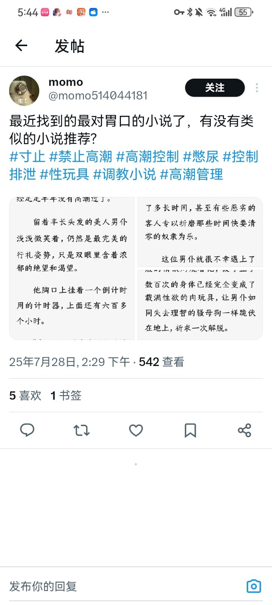
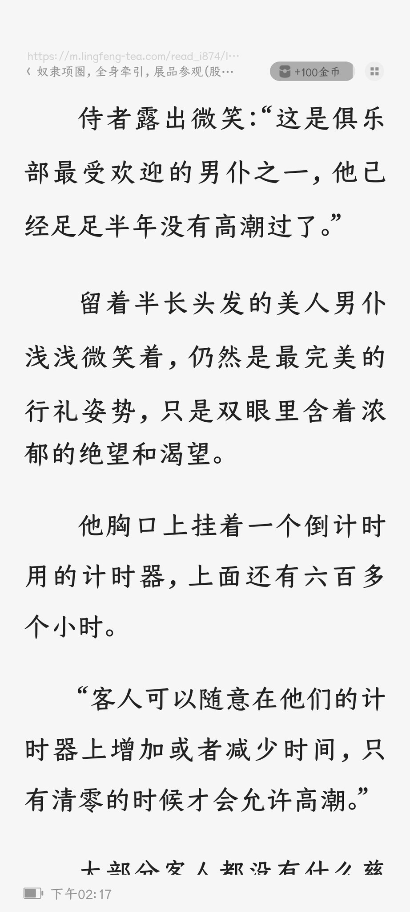
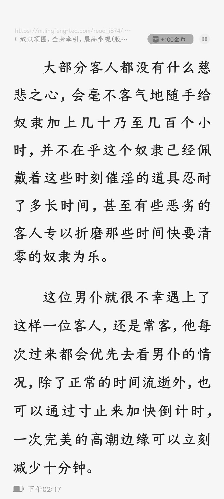
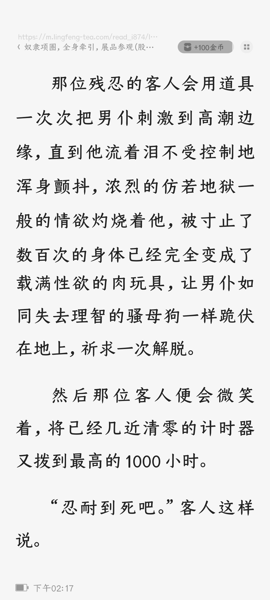

弗雷尔卓德–灵狐🏳️⚧️
@Cheese_Ghostfox
@lumuyuanMadoka2 不像是喻体，而是一种基于世俗社会分工与刻板印象的状态




鹿目圆○
@lumuyuanMadoka2
无意冒犯
所以是有病吗
前面写的好好的，你写让男仆禁欲半年作为任人玩弄的性玩具，这可以
但是最后一页说「让男仆如同失去理智的骚母狗一样跪伏在地上」是有病吗??
你不是在写「男仆」吗，为什么要把他欲求不满的样子比作「骚母狗」?
打出这些文字我都嫌脏我输入法
女性是什么，形容「骚」的喻体?? https://t.co/29i7fSx3TX